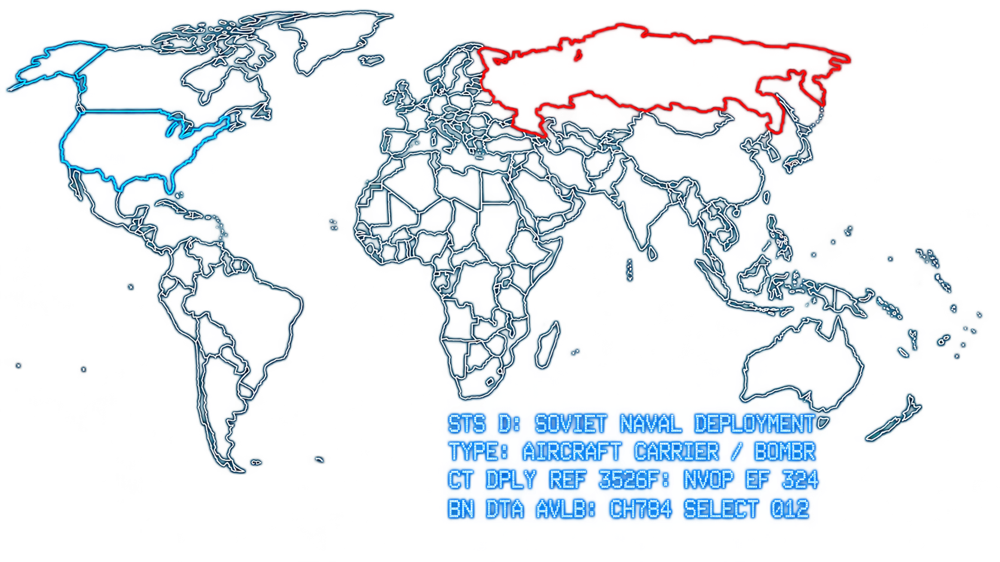
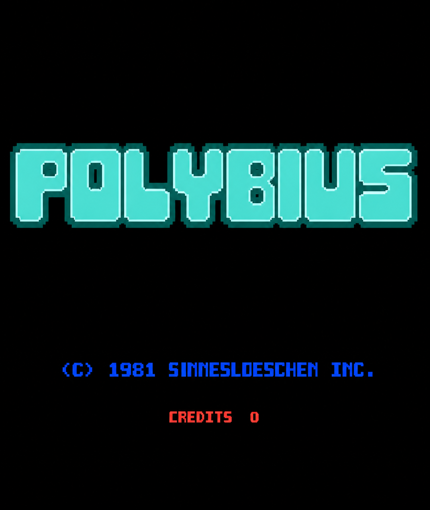
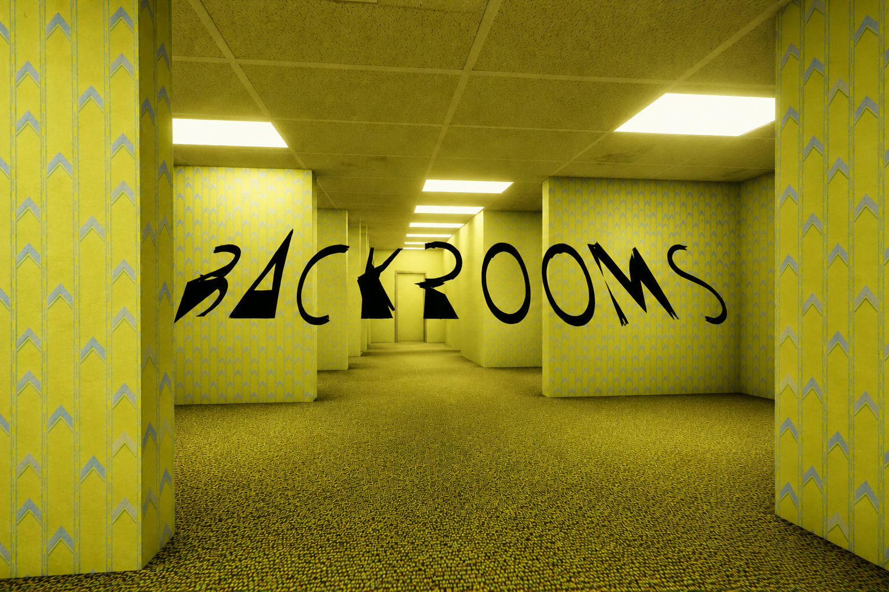

Some Secrets Were Never Meant to Be Found
Explore strange internet mysteries, forgotten game secrets, unexplained phenomena, and digital legends that continue to puzzle curious minds.

Mysteries Waiting to Be Solved
Cicada 3301
In 2012, an anonymous group called Cicada 3301 released a series of complex puzzles across the internet. The puzzles involved cryptography, programming, literature, and hidden clues, but the identity and purpose of the group remain unknown.

Polybius
Polybius is the subject of an infamous arcade-game legend about a mysterious machine supposedly appearing in Portland, Oregon. Stories claim players experienced strange effects, but no verified evidence of the arcade cabinet has been found.

The Backrooms
The Backrooms began with a single unsettling image of an empty yellow room and grew into a massive internet-born fictional universe. Its countless levels, entities, and stories have been created and expanded by an online community.
Minecraft's Far Lands
In early versions of Minecraft, a strange terrain-generation phenomenon known as the Far Lands appeared at extreme distances from the game's center. Their bizarre landscapes became one of Minecraft's most famous exploration mysteries.
“The oldest and strongest emotion of mankind is fear, and the oldest and strongest kind of fear is fear of the unknown.”